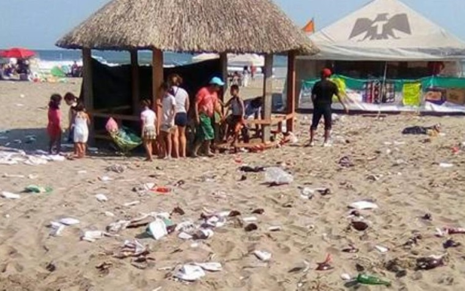

Mapa Interactivo de Tabasco
Coloca el cursor sobre el nombre de los municipios para mas información

Recolección de Basura en Playas de Paraíso, Tabasco
La recolección de basura en las playas de Paraíso, Tabasco, es un aspecto fundamental para mantener estos espacios naturales limpios y libres de contaminación. A través de programas de limpieza y concientización, se busca fomentar la protección del medio ambiente y promover la participación activa de la comunidad en el cuidado de nuestras playas.
Contaminación en el Municipio de Centro, Tabasco
La contaminación en el municipio de Centro, Tabasco, es un problema que afecta la calidad del aire, el agua y el suelo. La emisión de gases contaminantes, la mala gestión de residuos y otras actividades humanas irresponsables contribuyen a este problema ambiental.
Contaminación en el Municipio de Jonuta, Tabasco
La contaminación en el municipio de Jonuta, Tabasco, representa un desafío ambiental que requiere acciones inmediatas. La deforestación, el vertido de desechos industriales y la contaminación del agua son algunos de los problemas que afectan a esta zona.